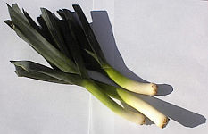

"Partitchuliéthement dans l'hivé quand i' fait eune néthe fraid," qu'un vièr poète nos dit, "tch'est qu'i' y'a tchi rêcaûffe comme d'la soupe dé pouothé?" L'pouothé est eune fanmeuse lédgeunme, dgia, un près pathent d'l'ouognon et d'l'ail. Drait comme un pitchet en vèrt et blianc, l'pouothé est pus belle qu'ses couôsîns et gângn'gnait eune compétition d'bieauté contre la patate, la suidiche et sustout la pânnais, eune réchinne tch'est laie comme lé péché du Dînmanche. Mais tout comme les reines dé bieauté tchi dithent qu'i' veulent souongni les gens, l'pouothé est quâsiment un docteu du rouoyaume d'la vèrduthe.
Ch'est en tchi not' poète nos explyitchit qué "pouor les fil'yes, dans touos âges et touos temps, et prîncipalement quand il' ont l'mal ès dents, pouor les dgéthi bein vite j'n'en fais pas dé ségret, ch'est d'la soupe tchi lus faut auvec raide dé pouothé". Chu rînmeux-là mentionnit étout la vétheule, les r'fraideûthes et d'aut's maux, mais au jour d'aniet nos docteurs n'sembl'yent pon préscrithe d'la soupe dé pouothé.
L's anciens connaîssaient la valeu des pliantes dans les r'mièdes du temps pâssé tchi n'sont pon les méd'cinnes qu'nou-s'acate siez l'apotitchi. L'ail a du pouvé antiseptique et nou dait sé d'mander si san couôsîn l'pouothé a un pouvé d'même. Sans doute, v'là pouortchi qu'nou n'vait pon d'vampithes Gallouais. Les vampithes, véthe, n'peuvent pon stanner l'ail, mais les Gallouais, ieux, aiment bein l'pouothé, lus lédgeunme nâtionnale.
À la Saint Dâvi, les Gallouais portent des pouothieaux ou des g'zettes. J'mé d'mande si nou pouôrrait sèrvi d'la soupe dé pouothé auve eune flieur dé g'zette à fliotter d'ssus, tout comme les pétales dé soucique sus not' soupe d'andgulle. Même si ch'n'est pon un fricot pouor les vampithes, les docteurs dév'thaient la préscrithe pouor les dragons à la Saint Dâvi. Eune bouonne Saint Dâvi à touos nos anmîns Gallouais! Dydd Gwyl Dewi hapus!
Geraint Jennings
Viyiz étout: